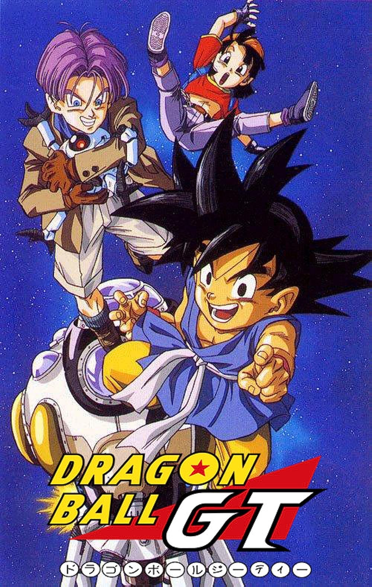
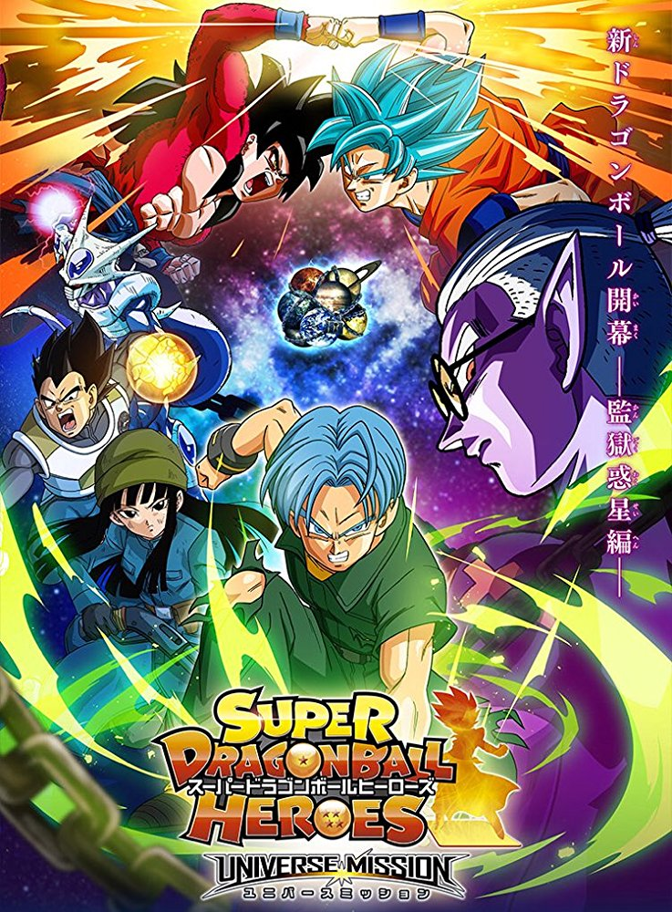

Anime
Wat is Anime?
Anime is de Japanse afkorting voor animēshon (アニメーション), leenwoord van het Engelse animation. Buiten Japan wordt dit woord gebruikt om Japanse tekenfilms en animatiefilms aan te duiden. Binnen Japan wordt het woord gebruikt om alle soorten animatiefilms en tekenfilms, zowel binnen- als buitenlandse, aan te duiden. Traditioneel werden de animaties met de hand getekend, maar tegenwoordig wordt het merendeel geproduceerd via digitale animatietechnieken. Anime wordt gebruikt in televisieseries, films, video's, computerspellen, reclame en internetuitgaven (ONA) en vertegenwoordigt de meeste, of zelfs alle, genres van fictie. De thema's binnen anime zijn vaak gericht op een ouder publiek.Hoewel de vroegst bekende Japanse animatie uit 1917 komt en vele originele Japanse tekenfilms werden geproduceerd in de opvolgende decennia, werd de karakteristieke stijl waarom anime bekend is pas in de jaren zestig van de twintigste eeuw ontwikkeld, en kwam het pas in de jaren tachtig in opkomst buiten Japan.
Dragon Ball (Anime)
De Dragon Ball anime is geanimeerd door Toei Animation. Het is een bewerking van de eerste 194 hoofdstukken van de gelijknamige manga gemaakt door Akira Toriyama, die werden gepubliceerd in Weekly Shonen Jump van 1984 tot 1995. De anime omvat 153 afleveringen die van februari 1986 tot april 1989 op Fuji TV werden uitgezonden. Het werd uitgezonden in 81 landen over de hele wereld en maakt deel uit van de Dragon Ball Franchise.

Dragon Ball Z (Anime)
Dragon Ball Z (ドラゴンボールZ, afgekort DBZ) is een Japanse animeserie gebaseerd op de manga Dragon Ball door Akira Toriyama en geproduceerd door Toei Animation. De serie is een vervolg op de televisieserie Dragon Ball. De anime omvat 291 afleveringen die van april 1989 tot januari 1996 op Fuji TV werden uitgezonden.

Dragon Ball GT (Anime)
Dragon Ball GT (ドラゴンボールGT, Grand Tour) is een Japanse animeserie en 1 van de vervolgen op Dragon Ball Z. De productie van Dragon Ball GT is anders dan de voorgangers Dragon Ball en Dragon Ball Z, omdat Dragon Ball GT niet gebaseerd is op de Dragon Ball manga bedacht door Akira Toriyama. Hoewel de manga al gestopt was, ging animatiestudio Toei zelf aan de slag met een nieuwe serie. Toriyama heeft echter wel karakterontwerpen geleverd aan de serie en meegeholpen aan het concept van de serie. Toriyama heeft aangegeven zelf ook deze kant op te zijn geweest mits hij de Dragon Ball manga verder had geschreven. Dragon Ball GT begon 7 februari 1996 en eindigde 19 november 1997 en telt 64 afleveringen.
Dragon Ball Super
Dragon Ball Super (Doragon B'ru) (algemeen afgekort als DBS) is de vierde installatie in de Dragon Ball-franchise, die liep van 5 juli 2015 tot 25 maart 2018. Het speelt zich af tussen Dragon Ball Z-afleveringen 288 en 289 en is de eerste Dragon Ball-televisieserie met een nieuwe verhaallijn in 18 jaar sinds de laatste aflevering van Dragon Ball GT in 1997. Dragon Ball Super heeft 131 afleveringen en is op Fuji TV uitgezonden.

Dragon Ball films
Er zijn in totaal 22 Dragon Ball films. 4 van Dragon Ball, 15 van Dragon Ball Z, 2 van Dragon Ball Super en 1 live-action. Er zijn maar 5 films die horen bij het verhaal. Voor de Dragon Ball en Dragon Ball Z films is er niet zo veel informatie, de Dragon Ball Super films daar in tegen zijn best populair. Bijvoorbeeld Dragon Ball Super: Broly (2018), die wereldwijd meer dan $ 122,7 miljoen opbracht.

Andere Dragon Ball media
Dragon Ball heeft ook Spin offs, zoals Dragon Ball Heroes en Dragon Ball Super Heroes. Deze series horen niet bij het verhaal net als de meeste films. Het is vaak promotie voor de spelletjes die zijn gemaakt die te maken hebben met Dragon Ball in het algemeen. Deze Spin offs gaan daarom ook vaak over verschillende Series in de Dragon Ball Franchise en ze worden vaak samen gevoegd.
